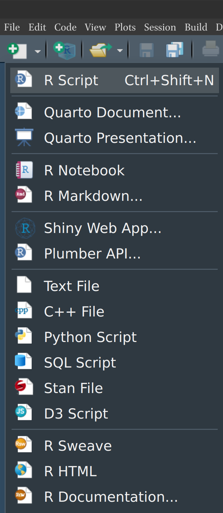
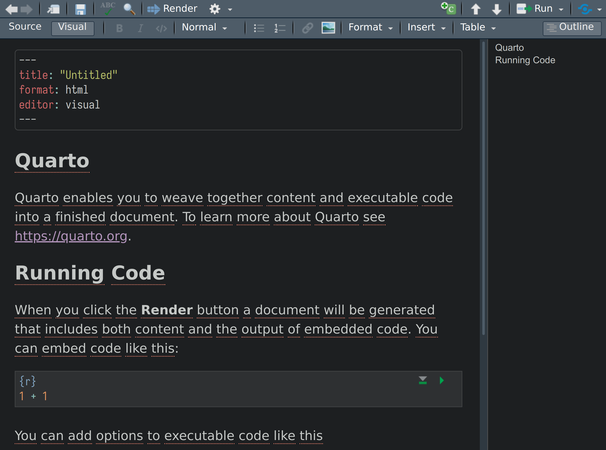
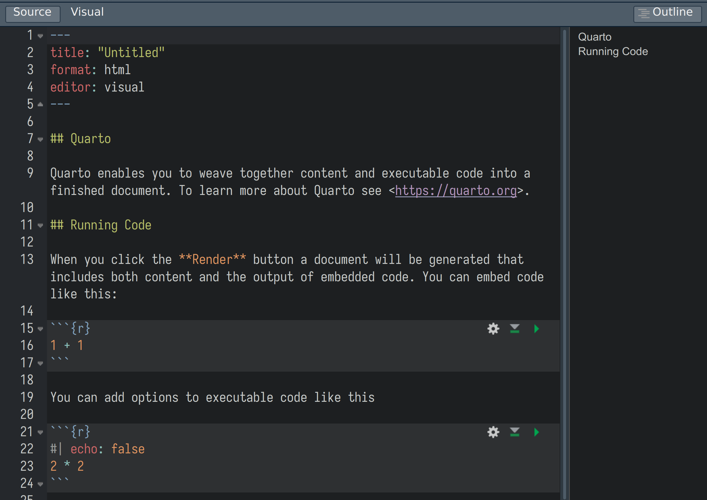
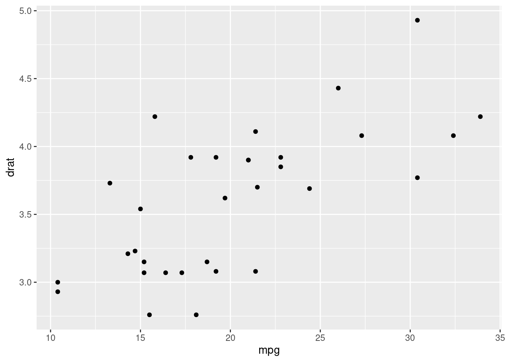
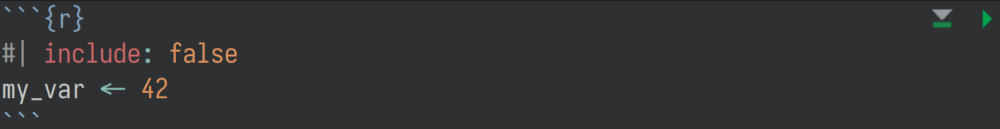

install.packages("quarto")9 Введение в quarto
quarto — это публикационная система с открытым исходным кодом, которая имеет очень хорошую интеграцию с R и RStudio и является продолжением важнейшего для R-комьюнити пакета rmarkdown. quarto позволяет делать документы, презентации, веб-страницы и большие сайты, а в связке с пакетом shiny еще и интерактивные приложения. Все это делается в едином формате, который позволяет интегрировать код на R, Python, Julia, Observable и некоторые другие. Такая интеграция позволяет делать интерактивные документы и веб-сайты, в которых всё — графики, таблицы и списки литературы — обновляются одним нажатием кнопки на основе обновленных данных. Также создатели quarto снабдили его подробнейшим сайтом с материалами, объясняющими самые разные аспекты создания документов в quarto. Кроме того, рекомендую следующие видео Мине Четинкая-Рандел:
quarto-документы по своей сути сильно напоминают jupyter-ноутбуки. Jupyter-ноутбуки тоже представляют собой фрагменты кода перемешанные с markdown разметкой, в которых каждый фрагмент кода можно при желании запустить. Отличие заключается в том, что quarto-документы хотя и предоставляют запустить каждый фрагмент в текущей сессии, однако чаще всего их компилируют от начала до конца в новой сессии (т. е. переменные, которые пользователь создал в текущей сессии никак не влияют на результат). В R тоже есть ноутбуки (File > New File > R Notebook).
9.1 Установка quarto
Для установки quarto нужно скачать установшик с этой страницы, а в RStudio следует установить пакет quarto:
После этого можно пойти в меню Rstudio File > New File > Quarto Document или ткнуть на крайне левую иконку New File и выбрать из выпадающего списка Quarto Document. После этого откроется окошко, где можно набрать заголовок и автора документа. Эти поля можно не заполнять, а исправить потом в самом документе.

9.2 Режимы Source / Visual
В публикационных системах достаточно давно есть противостояние между разными системами. Одни обычно описывают акронимом WYSIWYG (what you see is what you get). В них пользователь набирает и редактирует документ в том виде, в каком он потом, согласно ожиданиям пользователя, будет напечатан или отображен. В качестве примеров такой системы можно привести распространенные редакторы MS Word, LibreOffice или облачные Google Documents. Альтернативой являются компилируемые системы, в которых документ создается при помощи некоторых стандартизованных кодовых вставок, которые кодируют желаемое форматирование для компилятора. Примером такой системы является \(\LaTeX\), Markdown и другие. Изначально система Rmarkdown предполагала создание документов второго рода, однако при разработке quarto в RStudio была добавлена WYSIWYG панель. Между понелями можно переключаются кнопками Source и Visual в левом верхнем углу. Мы в наших материалах будем использовать вкладку Source. Важно отметить, что несмотря на WYSIWYG вкладку документы все равно нужно компилировать нажатием кнопки Render с синей стрелочкой. Некоторые операции сильно удобнее делать в WYSIWYG вкладке, например, вставлять символы и эмодзи, редактировать таблицы и много другое, — все это изложено в отдельном разделе документации quarto.


9.3 Структура quarto-документов
Стандартное расширение quarto-документов — .qmd. Все quarto-документы могут содержать один из трех элементов:
- расширенную markdown-разметку при помощи которой пишутся текстовые блоки
- фрагменты кода (в том числе и на языках отличных от R)
yaml-шапка, в которой хранится основные метаданные и настройки документа. Начало и конецyaml-шапки отделены тремя минусами---.
Далее мы рассмотрим все эти элементы.
9.4 Расширенная markdown-разметка
Вот примеры форматирования текста.
| markdown-разметка | Результат |
|---|---|
|
Заголовок 1 уровня |
|
Заголовок 2 уровня |
|
Заголовок 3 уровня |
|
Заголовок 4 уровня |
|
Заголовок 5 уровня |
|
Заголовок 6 уровня |
|
курсив, полужирный, полужирный курсив |
|
верхний индекс2 / нижний индекс2 |
|
|
|
фрагмент кода |
|
ссылка https://lib.ru/ |
|
другая ссылка |
|
подчеркивание |
|
малые прописные |
|
|
|
|
|
|
|
Сноска1 и еще одна с названием2. |
В quarto для вставки формул используется код . Фрагменты формулы, которые на отдельной строке нужно вводить в двойных знаках доллара:
$$Z(\lambda) = \int_{\mathcal{C_x}} dz g(z) e^{-\frac{f(x)}{\lambda}}$$\[Z(\lambda) = \int_{\mathcal{C_x}} dz g(z) e^{-\frac{f(x)}{\lambda}}\]
Формулы внутри текста следует вводить в одинарных знаках доллара:
Вот строка, в ней есть формула $\int_{\mathcal{C_x}} dz g(z) e^{-\frac{f(x)}{\lambda}}$Вот строка, в ней есть формула \(\int_{\mathcal{C_x}} dz g(z) e^{-\frac{f(x)}{\lambda}}\)
9.5 Вставка изображений и графиков
Стандартный синтаксис для вставки внешних изображений выглядит так .
Размер вставялемого изображения можно изменить:
{width="80%"}Можно прижать к правому краю:
{width="80%" fig-align="right"}Изображения можно комбинировать вместе. Для этого следует создать окружение при помощи :::. В фигурных скобках содержится ключ для ссылки на изображение, к которой потом можно обращаться и аргумент layout-ncol="2". В фигурных скобках после конкретных изображений вставлены ключи для ссылки на отдельные подрисунки.
::: {#fig-pictures layout-ncol="2"}
{#fig-flowers}
{#fig-leafs}
Фотографии
:::Теперь мы можем сослаться на изображение Рисунок 9.2 и отдельные подрисунки Рисунок 9.2 (b) и Рисунок 9.2 (a). Как видно, ссылки оформляются при помощи знака собаки. Ключ рисунков должен начинатсья с @fig- (аналогичные правила действуют и для других объектов: @sec- для @tbl- для таблиц). Первое предложени данного абзаца сделано при помощи следующего фрагмента расширенной markdown-разметки:
Теперь мы можем сослаться на изображение @fig-pictures и отдельные подрисунки @fig-leafs и @fig-flowers.Для вставки изображения, которое генерируется при помощи кода, можно использовать фрагмент кода (см. раздел Раздел 9.8 ниже). Аргументы фрагмента кода добавляют при помощи #|, так что добавим аргументы fig-cap, который отвечает за подпись к графику, и аргумент label, который содержит ключ для ссылки:
```{r}
#| fig-cap: "Наш код на R"
#| label: "fig-code_r"
library(tidyverse)
mtcars |>
ggplot(aes(mpg,drat))+
geom_point()
```

Попробуем сослаться на Рисунок 9.3 (код ссылки такой же, как и выше: @fig-code_r).
9.6 Вставка таблиц
Для вставки таблиц в quarto используется стандартный в markdown pipe table syntax (знак | часто называют pipe — аналог конвеера). Подпись вставляют, поставив двоеточие. Выравнивание регулируется позицией двоеточия в разделителе заголовка и тела таблицы:
| по умолчанию | слева | справа | по центру |
|--------------|:------|-------:|:---------:|
| йц | ук | ке | нг |
| фыв | апр | олд | джэ |
| я | ч | с | м |
: Таблицы в markdown| по умолчанию | слева | справа | по центру |
|---|---|---|---|
| йц | ук | ке | нг |
| фыв | апр | олд | джэ |
| я | ч | с | м |
Создавать такие таблицы руками не очень приятно, поэтому можно посмотреть на
- бесплатный Сайт Tables Generator, позволяющий преобразовать в pipe table syntax таблицу из Excel/LibreOffice Calc
- кроме того, для вставки таблиц можно использовать Visual Editor
quarto, который работает похожим образом.
Кроме того, после подписи (или на месте подписи) в фигурных скобках можно задать размеры столбцов:
| слева | справа | по центру |
|-------|--------|-----------|
| ук | ке | нг |
| апр | олд | джэ |
| ч | с | м |
: Таблица с разной шириной столбцов {tbl-colwidths="[3,1,5]"}| слева | справа | по центру |
|---|---|---|
| ук | ке | нг |
| апр | олд | джэ |
| ч | с | м |
Ссылаться на таблицы, как и на картинки, можно при помощи ключа, который задается хэштегом в фигурных скобках, например, Таблица 9.1 (код ссылки: @tbl-our_table):
| слева | справа | по центру |
|-------|--------|-----------|
| яч | см | ит |
| ъхз | щшг | нку |
| л | у | ы |
: Таблица с ссылкой {#tbl-our_table}| слева | справа | по центру |
|---|---|---|
| яч | см | ит |
| ъхз | щшг | нку |
| л | у | ы |
Таблицы, которые генерируются при помощи кода, имеют такие же аргументы, что и графики (tbl-cap и label).
```{r}
#| tbl-cap: "Наша вторая таблица"
#| label: "tbl-our_second_table"
tibble(id = 1:26, let = letters[26:1])
```tibble(id = 1:26, let = letters[26:1])На эту таблицу можно сослаться стандартным образом: Таблица 9.2 (код ссылки: @tbl-our_second_table).
Функционально markdown-таблицы и таблицы, которые порождены кодом, достаточно ограничены. Если есть нужда в создании таблиц с несколькими вложениями, сложным форматированием и, например, сносками, то можно обратиться к одному из следующих пакетов:
9.7 Ссылки на литературу
В quarto используется стандартная для /Pandoc система, в рамках котрой библиография оформляется в виде стандартизированного файла в одном из следующих форматов BibLaTeX (.bib) или BibTeX (.bibtex). Для того, чтобы все заработало создадим файл reference.bib со следующим содержанием:
@article{nichols2007,
title={What, if anything, is typology?},
author={Nichols, Johanna},
year={2007},
volume={11},
issue={1},
pages={231--238},
journal={Linguistic Typology},
publisher={Walter de Gruyter}
}
@book{романова2016,
title={Биология},
author={Романова, Елена Михайловна and Шленкина, Татьяна Матвеевна and Шадыева, Людмила Алексеевна and Любомирова, Васелина Николаевна and Игнаткин, Денис Сергеевич and Шленкин, Константин Владимирович},
year={2016},
publisher={Федеральное государственное бюджетное образовательное учреждение высшего образования}
}После этого следует добавить в yaml-шапку следующую строчку bibliography: references.bib, а затем можно ссылаться на источники одним из следующих способов:
| markdown-разметка | Результат |
|---|---|
|
В работе (Nichols 2007, pp 10-15; также Романова et al. 2016) |
|
Джоханна Николс утвержадет … (2007) |
В результате получатся интерактивные ссылки, а в конце еще и автоматически сгенерируется список литературы. В технических работах принято ссылаться на работы при помощи номера (например, в работе [1, 3]…). Кроме того, автоматический стиль форматирования литературы может отличаться от требований, например, ГОСТа. Обе эти задачи решает особый стилевой файл с разрешением .csl, который следует поместить в папку с проектом, добавив при этом в yaml-iапку следующую строчку: csl: ваш-файл.csl. Один из вариантов .csl файла для оформления литературы по ГОСТу можно найти здесь.
Откуда же взять наполнение файла references.bib? Есть несколько путей. Во-первых, в Google Scholar есть кнопка, позволяющая процитировать работу. При ее нажатии можно выбрать BibTex формат. Во-вторых, Visual Editor quarto позволяет залезать в разные библиографические базы данных (Crossref, DataCite, PubMed), если в меню нажать Insert > Citation.
Также важно отметить, что сущестует пакет bib2df, который позволяет перегонять библиографический файл в таблицу и обратно, так что создание библиографии может стать обычной задачей заполнения таблички.
library(bib2df)
bib2df("references.bib")9.8 Фрагменты кода
В quarto-документ можно поместить фрагменты кода, которые во время компиляции будут исполнены. Обычно такие фрагменты начинаются с трех знаков машиночитаемого обратного апострофа (так на русский переводится английское Backtick — название для символа, который в английской раскладке находится над буквой ё) и названия языка в фигурных скобках: ```{r}. В меню справа есть зеленая кнопка c плюсом, которая позволяет вставлять фрагменты кода. Такого же результата можно добиться при помощи сочетания горячих клавиш: Ctrl+Alt+I.
- Посчитаем на R длину в символах названий английских месяцев.
```{r}
nchar(month.name)
```nchar(month.name) [1] 7 8 5 5 3 4 4 6 9 7 8 8- Посчитаем на Python квадратный корень 8.
```{python}
num = 8
num_sqrt = num ** 0.5
print('The square root of %0.3f is %0.3f'%(num ,num_sqrt))
```num = 8
num_sqrt = num ** 0.5
print('The square root of %0.3f is %0.3f'%(num ,num_sqrt))The square root of 8.000 is 2.828- Соединим строки при помощи bash.
```{bash}
name=Pushkin
year=1799
echo "$name was born in $year"
```name=Pushkin
year=1799
echo "$name was born in $year"Pushkin was born in 1799Фрагменты кода могут иметь свои аргументы, которые добавляются при помощи #|. Мы видели некоторые аргументы в разделах про вставку изображений и таблиц. Вот еще некоторые важные аргументы:
echo— отвечает за то, показывать ли код
```{r}
#| echo: false
2+2
```[1] 4eval— отвечает за то, исполнять ли код
```{r}
#| eval: false
3+3
```3+3include— в случае значенияtrueпозволяет скрытно исполнить код, не показывая ни кода, ни результата его исполнения;
```{r}
#| include: false
my_var <- 42
```Ничего не видно, но переменную my_var можно использовать в следующих фрагментах кода.
cache— позволяет закэшировать исполнение данного фрагмента кода. Это важно для фрагментов, исполнение которых занимает много времени, например, для создания больших моделей, построения графиков с большим количеством элементов и т. п.
Вставленные фрагменты кода содержат две кнопки справа, позволяющие запустить текущий фрагмент (зеленый треугольник) и все фрагменты кода до текущего фрагмента (серый треугольник):

9.9 yaml-шапка
Основные параметры документа хранятся в yaml-шапке. YAML — это язык разметки, который используют для конфигурационных файлов. Важно про него понимать, что это списочный формат хранения данных, который чувствителен к отступам3 (все остальное в R — нет). Перечислим некоторые полезные параметры:
format— поле, которое позволяет задать формат получившегося файла. Наиболее распространенные значенияhtml,pdf,docx.title— заголовок документаsubtitle— подзаголовок документаauthor— автор, может быть вложенным списком, как, в примере ниже
author:
- name: "А. О. Иванова"
email: "aoivanova@hse.ru"
affiliation: "НИУ ВШЭ"
- name: "О. А. Живанова"
affiliation: "НИУ ВШЭ"
- name: "Б. О. Зинова"
affiliation: "МГУ"date— дата. Можно использовать простоtoday.date-format— формат даты, я предпочитаю писать в этом аргументеD.MM.YYYYlang— параметр языка, если написатьru, то автоматически произойдет перевод некоторых стандартных полей документаnumber-sections— включает автоматическую нумерацию разделовbibliography— файл с бибилографиейcsl— путь к файлу.cslдля отображения библиографииtoc— создание автоматического содержанияabstract— это поле позволяет добавить аннотацию. Ниже приведено оформление многострочной аннотации
abstract: >
Язык программирования R дает исследователю полный набор инструментов для
анализа текста. На занятии мы познакомимся с некоторыми из них, такими как
анализ частотности, векторизация и кластеризация. Кроме того, обсудим, какие
научные задачи могут решаться при помощи этих методов в историко-философских
и историко-культурных исследованиях. Опыт программирования не требуется.execute— поле, позволяющее задать параметры всех фрагментов кода в документе, например:
execute:
warning: false
fig-width: 9df-print— важный для html документов параметр, позволяющий выбрать один из возможных способов отображения датафреймовdefault— стандартный, как в консоли;tibble— стандартный, как в консоли, но в формате tibble;kable— минималистичный вариант, подходит для всех видов документов;paged— интерактивная таблица, подходит для html страниц.